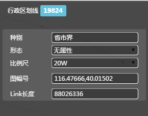
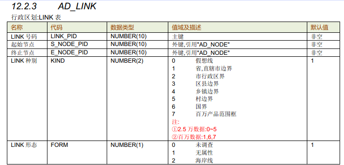
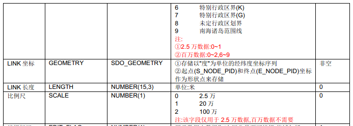
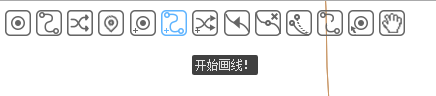
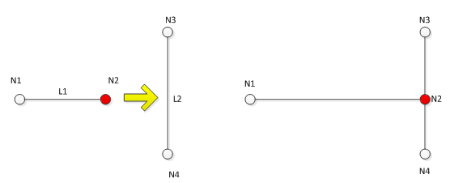
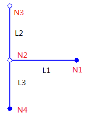
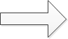
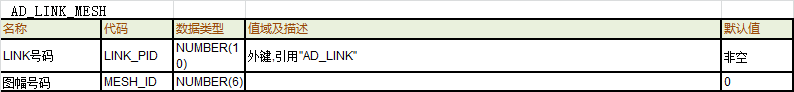

新增LINK


新增线
定义类型

选择行政线
绘制线型

创建工具栏

map界面
空格保存
取消
生成数据
放弃修改


操作说明：
0、进入行政区划场景；
1、 选择新增线，线类型默认为“行政区划线”；
2、系统弹出捕捉编辑工具栏，默认开启AD-link捕捉功能；
3、选择创建线的起点；
4、在map界面上鼠标左键点击划线，进行形状绘制；
5、系统虚线显示LINK；
6、空格键完成LINK形状绘制；
7、自动保存，生成数据（各字段值按照模型默认维护）；
8、界面高亮LINK并进入编辑场景（属性栏按照选择默认界面展示）；
9、绘制下一根道路线（从第4步开始）
取消当前link的新增：
1、点击其他工具按钮，结束当前动作，切换至其他动作
2、保存前，按键盘的“Esc”，回退至上一动作
3、点击属性栏取消，放弃当前新增动作

实时控制：
1、相邻形状点不可过近，不能小于2m；
2、创建link，鼠标只点一个形状点就进行保存时，不能保存数据；
3、背景link不能自相交（前检查）
4、link长度应大于2米
业务要求：
1、开启线捕捉功能，系统根据鼠标移动捕捉最近的线（捕捉范围系统默认）默认开启AD-link捕捉功能，把新创建的Link的端点设置在捕捉到的ADLink上；
2、开启点捕捉功能，系统捕捉最近的AD-NODE（捕捉范围系统默认），把新创建的Link的端点设置为该捕捉到的节点；
3、新创建的Link，部分形状在本图框外，则要在图框线处打断；
4、link的新增需要创建曲线的功能




形状编辑触发
操作说明：
1、点击形状编辑按钮
2、map界面高亮当前对象形状点并进入几何编辑
取消动作：
1、点击LINK属性栏或者其他工具按钮，自动开启对应功能
2、按键盘的“Esc”键，退出当前LINK的几何编辑触发；
形状编辑
业务说明：
1、map界面上通过点击修改几何形状；
2、编辑过程中可随时选择捕捉类型和方式
3、随每步动作展现形状点变更后，LINK的形状（与初始形状区分）
4、确定完成操作
5、触发必要检查，不满足条件的不允许保存，并在界面给出提示；
生成数据
业务说明：
1、更新后台及属性栏中字段值；
2、 根据业务逻辑，维护对象外属性变更信息；
在线检查
业务说明：
1、保存后，自动执行对应的在线检查；
操作说明：
1、点击Link，拖动到合适的位置，如果需要多次重复此操作；
2、点击操作的同时，在点击处添加一个形状点，结束拖动后系统对比显示拖动前后的Link
3、按空格键完成操作
4、系统记录下Link的最新的几何形状，并高亮显示
取消动作：
1、按Esc撤销上次移动的操作
2、点击其他编辑按钮，切换至对应编辑动作
业务说明：
1、行政区划LINK几何形状发生变化，行政区划FACE自动维护；
2、同一关系维护：如果此Link为主要素，则与当前Link具有同一线的Link也做相应操作；如果此Link不为主要素，则不允许修形；
3、移动link的形状点出图框时，程序自动打断跨出图幅的线，图框线上自动生成图廓点；若将已构成面link的形状点移出图幅时，程序自动打断跨出图幅的线并切割面，原面和link的种别不变，线号和面号自动维护，并根据行政区划面的种别在图廓线上自动创建相应的假想线【具体打断原则见创建node】；
4、当移动link的形状点穿过角点时，程序自动打断跨出角点的线，角点处自动生成角点；若将已构成面link的形状点移动穿过角点时，程序自动打断跨过角点的线并切割面，原面和link的种别不变，线号和面号自动维护【具体打断原则见创建node】；
实时控制：
1、相邻形状点不可过近，不能小于2m；
2、背景link不能自相交
3、此link不是该组同一关系中的主要素，不能进行修形操作
4、自相交线不能修改(构成面的link)
删除形状点
操作说明：
1、选择删除按钮，
2、选中该Link上的形状点，系统对比显示删除前后的Link
3、按快捷键完成操作
4、系统记录下Link的最新的几何形状，并高亮显示
取消动作
1、撤销本次删除形状点的操作，按Esc撤销上次移动的操作
2、点击其他编辑按钮，切换至对应编辑动作
实时控制：
1、节点形状点不允许删除
2、Face的点不能少于3个
3、图廓线不能修改
业务说明：
1、 删除形状点会导致形状点序号变化；
2、删除形状点保存后Link的几何形状改变，行政区划FACE自动维护
3、同一关系维护：如果此Link为主要素，则与当前Link具有同一线的Link也做相应操作；如果此Link不为主要素，则不允许修形；
打断LINK
操作说明：
1、选择打断按钮，
2、指定定线上位置；
3、按快捷键完成操作
4、系统自动将当前LINK在选择处分割成两根LINK，并在打断出生成新的NODE点
5、属性栏展示打断后两根link的信息
实时控制：
1、图廓线不能修改

1） 几何处理规则：
a) 打断后，原始LINK1删除；创建两条新的LINK（LINK2，LINK3）。新LINK的几何继承原始LINK的几何，并在打断处截断。即LINK2保留从NODE1到NODE3之间的几何；LINK3保留从NODE2到NODE3之间的几何；
2） 属性处理规则：
a) LINK2和LINK3都默认继承LINK1的属性。
3） 子要素维护：
a) 形态：继承原始LINK。
4） 行政区划LINK几何形状发生变化，行政区划FACE自动维护。
5） 同一关系维护：如果此Link为主要素，则与当前Link具有同一线的Link也做相应操作；如果此Link不为主要素，则不允许修形；
6） Link修形时，组成面的link序号程序自动维护，维护原则：从1开始，逆时针或者顺时针方向+1递增编号；


平滑修行
移动形状点
操作说明：
1、移动Link的端点，将其拖出原位置；
2、移动端点过程中，默认开启线捕捉，可将link端点挂接捕捉至另一根LINK上，
3、点击空格完成操作
4、系统记录下Link的最新的几何形状，并高亮显示
取消动作：
1、按Esc撤销本次分离节点的操作
参与变化的要素为两根ADLink，有且仅有两个ADLink，分别表示为ADLink1、ADLink2；
移动一个ADLink1的一个端点ADNode2（此端点有且仅有一根RDLink挂接），使其挂接到第二个ADLink2上，并且将其打断；
被移动的ADNode2，几何发生变化，但是Pid不变；

业务说明：
1、当移动端点时：
① 开启点捕捉，将一个link的节点形状点移动到另一个link的节点处，将这两个节点进行合并，同点位处只有一个node；
② 未开启点捕捉，将一个link的节点形状点移动到另一个link的节点处，这两个节点未进行合并，同点位处有两个node；
LINK编辑
选中线
map展示
LINK删除
link删除
删除数据
确认
属性栏展示
业务说明：
1、如果行政区划点未挂接其他任何行政区划Link，则同时删除该节点；
2、LINK是同一线关系的组成线：维护该同一线关系，删除时提示有同一关系。
1） 除该LINK外，同一线关系仅包含一条另外LINK，则删除Link的同时，解除同一线信息。
2） 除该LINK外，同一线关系还包含两条或更多的LINK，则：如果此link为主要素，则将此link从同一关系中解除，从剩余的link中根据优先级选择一个主要素，同一关系保留；如果此link不为主要素，则仅仅将此link从同一关系中解除，其余link同一关系保留；
3、维护面和要素
1）该LINK组成的面FACE，全部删除；但同时构成此Face的其他Link均应被保留；
2）被删除的FACE所属的Admin，如果仅由该FACE组成，则提示用户是否删除这些要素。
4、删除Link时，组成面的link序号程序自动维护，维护原则：从1开始，逆时针或者顺时针方向+1递增编号；
分离节点

操作说明：
1、移动Link的端点，将其从挂接处移出，形成新的端点；
2、点击空格完成操作
3、系统记录下Link的最新的几何形状，并高亮显示
取消动作：
1、按Esc撤销本次分离节点的操作
ADLink1、ADLink2, ADLink3具有相同的端点Node2
移动的Link1，几何发生变化，生成新的端点N5，但是Pid不变；



实时控制：
1、不允许对构成行政区划面的link进行节点分离；
2、不是该组同一关系中的主要素，不能进行修形操作
3、如果被分离的NODE做了同一关系，并且此node挂接了至少两根link，则不允许分离节点；
实时控制：
1、相邻形状点不可过近，不能小于2m；
2、背景link不能自相交
3、link长度应大于2米
4、不允许对构成面的Link的端点处形状点，进行修形操作
5、自相交线不能修改(构成面的link)
6、该点是图廓点，只能在图廓线上
7、此node不是该组同一关系中的主要素，不能进行修形操作
选定编辑方式


插入形状点

删除形状点

移动形状点

打断Link
操作说明：
1、在浮出菜单中选择编辑方式
2、程序默认选择”修行“
业务说明：
1、如果分离节点后的Link，部分形状在本图框外，则要在图框线处打断；
2、同一关系维护：如果此Link为主要素，则与当前Link具有同一线的Link也做相应操作；如果此Link不为主要素，则不允许修形；
选中线
map展示
操作说明（行政区划场景下）：
1、点击选择工具栏中“线选择按钮”，此时默认选择AD-link
2、map界面中左键选中AD-LINK,map界面高亮选中LINK
3、当前对象列出选中LINK类型及ID
4、属性栏列出选中LINK的属性卡片
取消当前LINK的选中：
1、点中其他Link/点/icon/面时，切换至其他要素
2、按键盘的“Esc”键，退出当前LINK的选择
LINK形状编辑
LINK属性编辑

操作说明：
1、点击具体按钮，触发属性编辑；
2、点击属性栏下方保存按钮；
取消动作：
1、点击取消按钮时，恢复当前属性栏结果为选中时状态
省市界
种别
0 假想线
1 省,直辖市边界
2 市行政区界
3 区县边界
4 乡镇边界
5 村边界
操作说明：
1、 点击编辑区域时，弹出可选择列表；
2、 下拉列表中高亮当前鼠标位置的条目；
3、 左键点击需修改成的某一条内容
4、 更改当前属性栏的值
编辑的取消：
1、 点击属性栏或map其他位置
2、 按键盘的“Esc”键，退出当前属性的编辑
实时控制：
1、图廓线不能修改
业务说明：
操作说明（行政区划场景下）：
1、点击选择工具栏中“选择线”，默认选择AD-LINK
2、map界面中左键选中线，map界面高亮选中线；
3、当前对象列出选中线类型及ID，属性栏列出选中node的属性卡片
4、点击属性栏删除按钮，触发确认提示（提示删除造成的影响）
5、确认后删除数据
取消当前LINK的选中：
1、点中其他Link/点/icon/面时，切换至其他要素
2、按键盘的“Esc”键，退出当前线的删除